Nucleus User Manual
At its most basic level the Nucleus is a 2.4 GHz IP mesh radio. The Nucleus also includes a Meshtastic radio for longer range, low bandwidth connections. The Nucleus onboard computer has some useful software installed by default, including Reticulum and OpenDHT to allow external applications to enable decentralized video, voice, and text communication, among others.
First Steps
The Nucleus ships without its antennas installed. The Wi-Fi antenna is marked with "WiFi" on the antenna itself and with a small WiFi symbol next to the port it should be installed on (Fig. 1). The LoRa antenna is installed on the unmarked RF connector (Fig. 2).
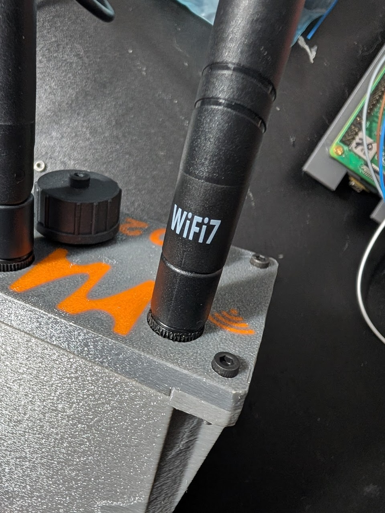
Fig. 1: Wi-Fi antenna
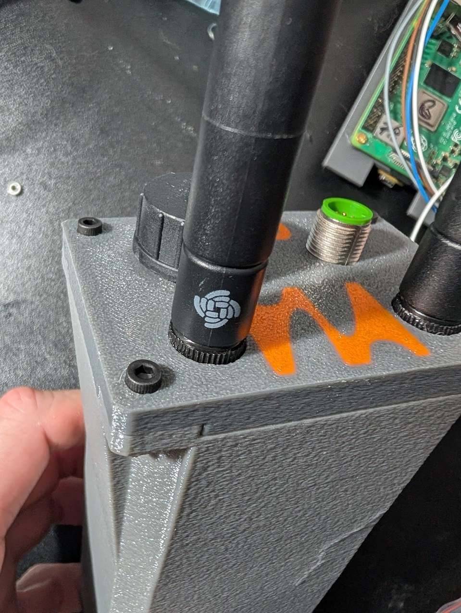
Fig. 2: LoRa antenna
The Nucleus also ships with a USB-A to M12 cable (Fig. 3). Screw the M12 connector onto the matching port on the Nucleus, then plug into any 5V power source to start the Nucleus. Auto boot should be complete within 1 minute. The general assembly is shown in Fig. 4 with a generic USB power bank providing power.
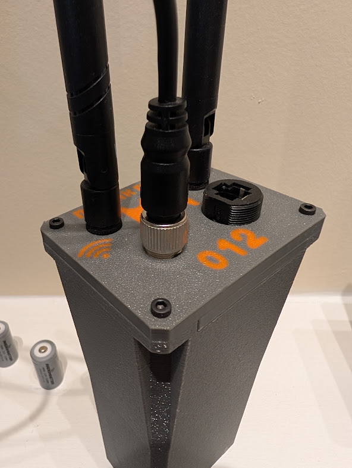
Fig. 3: M12 power connector
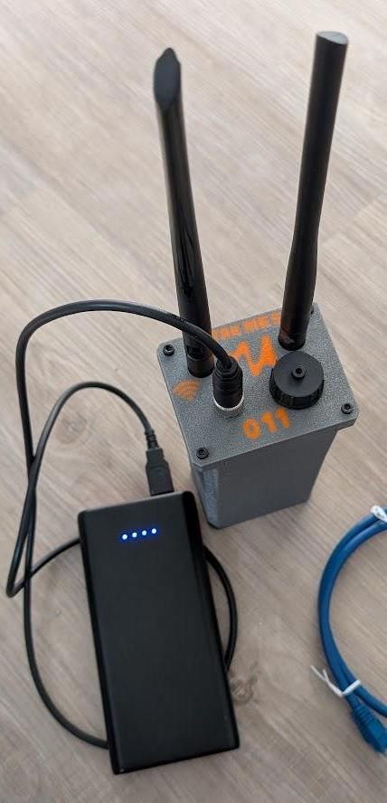
Fig. 4: General assembly
EUD Prep and Node Placement
Recommended Apps
To take advantage of all the Nucleus capabilities we recommend setting up your EUD as follows (Fig. 5).
- Web Browser — Create a shortcut to your node's IP address at port 5000. This will bring you to the Nucleus user interface.
- Tailscale — Optional. There is an instance already running on the Nucleus.
- OpenTAK ICU — Used for streaming video to the Nucleus, primarily used for ingestion by TAKserver (if installed) to be viewed by ATAK users.
- ATAK — Works particularly well on the high-speed IP mesh. With the official Meshtastic plugin installed, it can also take advantage of the onboard Meshtastic radio.
- Meshtastic App — For configuring the Meshtastic radio and using it standalone if desired.
- Jami — Text, Voice over IP, and video streaming.
- Sideband — A Reticulum-based application to take advantage of the Nucleus onboard Reticulum transport instance.

Fig. 5: EUD apps
Placement of Radio
Due to the nature of the shorter wavelengths of the onboard radios, it is recommended to mount the antennas as high as possible on the body to provide the best line of sight (Fig. 6). Either by physically setting the radio higher or using remote mount antennas.

Fig. 6: Radio placement
Nucleus OS
After the Nucleus has booted it will begin advertising a WiFi access point labelled as 00xx-nucleus-ap, where xx is your node's serial number. The default password is 52235223. This should be changed via the configuration page as soon as possible.
Once connected to that access point, take the web browser to 10.20.xx.1:5000 where xx is the serial number of your node. This will open the Nucleus OS UI.
Home Page
The home page displays the current node's mesh IP and channel, the info on the node's AP and number of clients connected to it, and a list of other Nucleus nodes connected via WiFi (Fig. 7). Below that are a series of navigation buttons to the other sections of the OS.

Fig. 7: Nucleus OS home page
Monitor Page
The Monitor page displays more in-depth statistics on each other node connected on the IP mesh (Fig. 8).
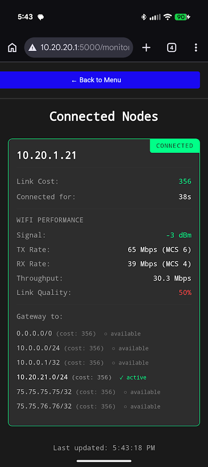
Fig. 8: Monitor page
Node Configuration Page
The Node Configuration page allows modification of mesh and node variables without having to edit system files directly (Fig. 9).
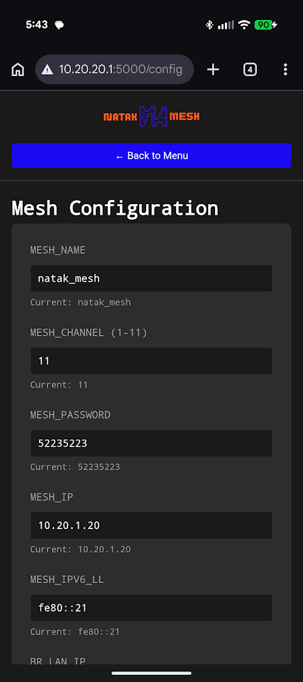
Fig. 9: Node Configuration page
Wi-Fi Scan Page
This page allows the user to scan the 2.4 GHz space (Fig. 10). It looks for interference on each of the 2.4 GHz channels, allowing the user to select the least congested channel for the mesh. Note, each node must switch to the same channel to join the mesh. Running this scan will disconnect the mesh network for the duration of the scan.
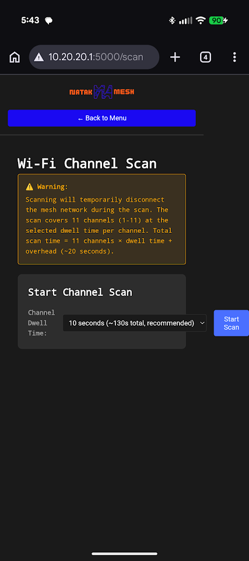
Fig. 10: Wi-Fi Scan page
Remote Management Page
This page allows the user to start/stop Tailscale connections and select a tailnet if there are multiples configured (Fig. 11). As a default, the node will be connected to the Natak Mesh tailnet to allow remote updating and troubleshooting if desired. New tailnets can be added or removed as desired.
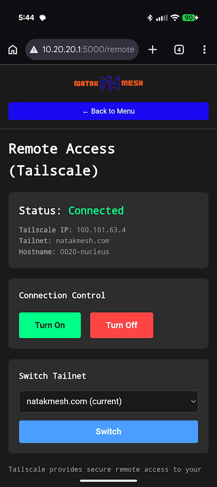
Fig. 11: Remote Management page
Ethernet Port Mode Page
This page allows the user to select what mode the ethernet port (if present) will run in (Fig. 12). WAN mode will allow the Nucleus node to accept an IP address from a DHCP server and will bridge that connection to the Wi-Fi mesh. LAN mode converts the ethernet interface to a DHCP server, allowing other client devices to connect to the Wi-Fi mesh via the ethernet port.
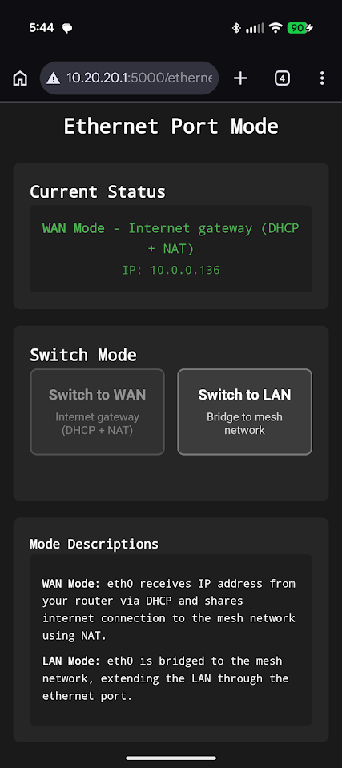
Fig. 12: Ethernet Port Mode page
OpenDHT Page
This page monitors the OpenDHT server on the node (Fig. 13). It shows the running state, the number of other DHT servers connected, and configuration details.
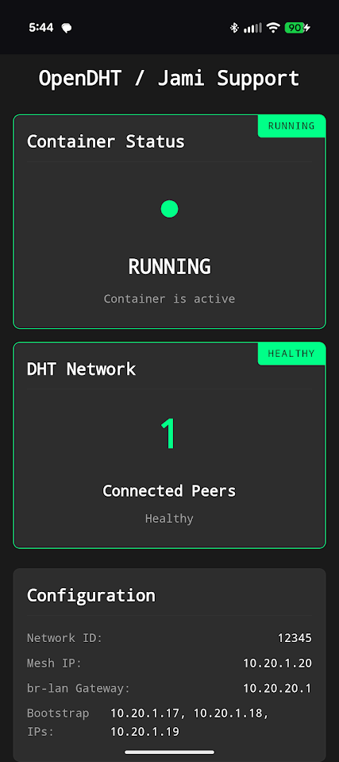
Fig. 13: OpenDHT page
Meshtastic Page
This page allows serial control of the onboard Meshtastic radio, enabling sending and receiving messages with other Meshtastic radios without use of the app (Fig. 14). Functionality here will expand in future revisions; currently it provides bare bones messaging.
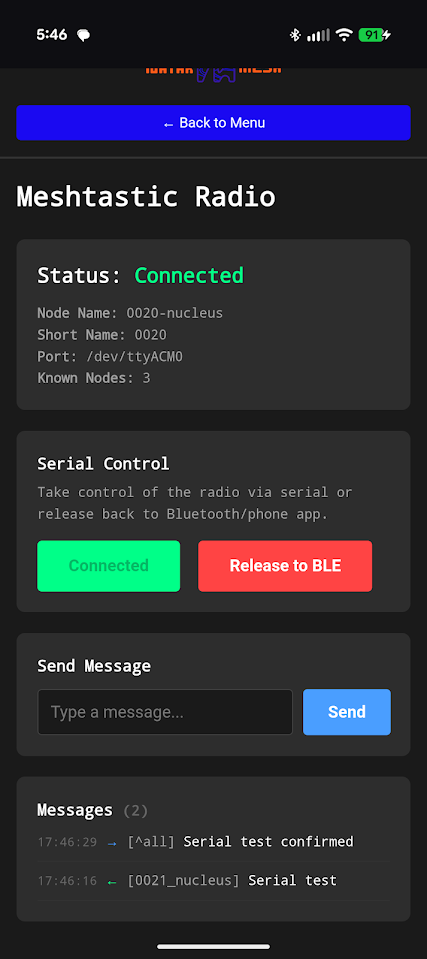
Fig. 14: Meshtastic page
Reticulum Monitoring Page
This page monitors the onboard Reticulum transport instance (Fig. 15). It displays the running state, reachable destinations, and interfaces.
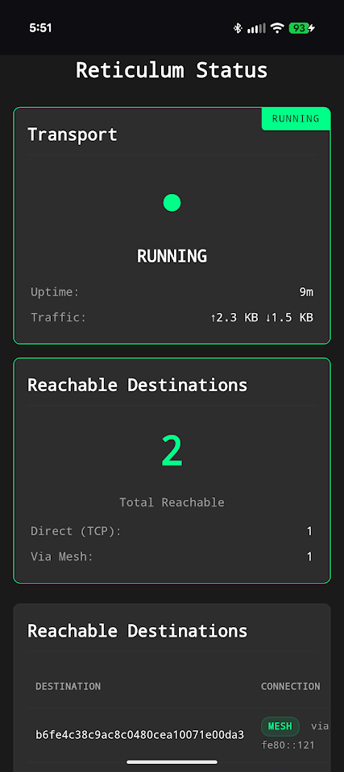
Fig. 15: Reticulum Monitoring page
OpenTAKServer Page
This page displays the server running state, number of connected EUDs, video stream list, and a link to open the OTS web interface (Fig. 16). This allows access to OTS directly from the Nucleus OS.
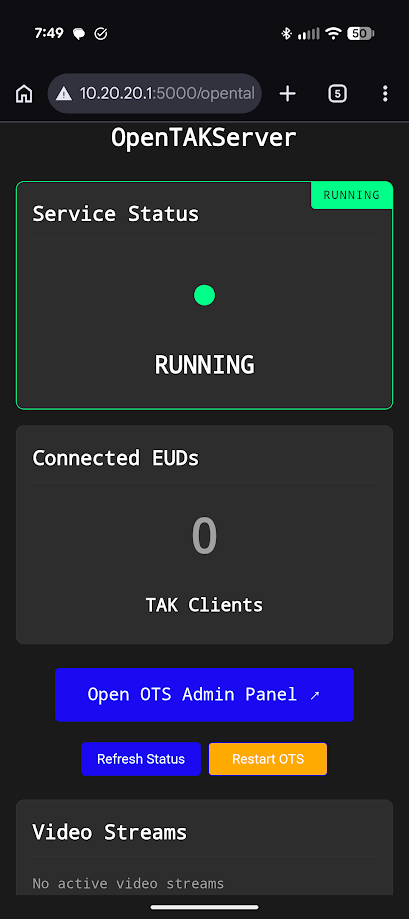
Fig. 16: OpenTAKServer page
App Setup
Jami
Navigate to Account Settings > Advanced to configure the OpenDHT settings to match those shown in Fig. 17. All IP addresses should be replaced with your node's IP address — the 10.20.17.1 shown is only an example.
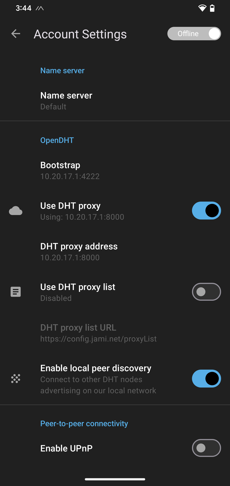
Fig. 17: Jami OpenDHT settings
Sideband
Navigate to the Connectivity section of Sideband and configure the TCP settings to match those shown in Fig. 18. All IP addresses should be replaced with your node's IP address — the 10.20.17.1 shown is only an example.
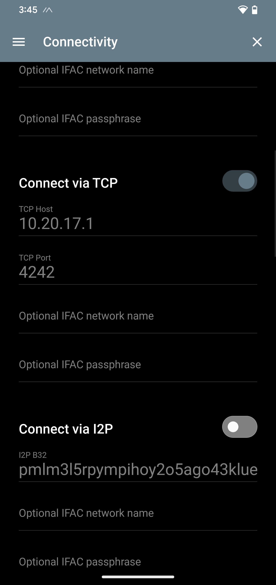
Fig. 18: Sideband TCP settings
Meshtastic
Refer to the official Meshtastic documentation to configure the Meshtastic radio. Once configured, the user can continue to use the Meshtastic app or switch to serial control of the Meshtastic radio through the Nucleus UI.
ATAK
ATAK will automatically take advantage of the Nucleus Wi-Fi mesh with no configuration needed. The official Meshtastic plugin can be loaded to give ATAK use of the onboard Meshtastic radio. If OpenTAKServer is installed, the OTS connection can be activated as well. Configuration of these features will be covered in future documentation.